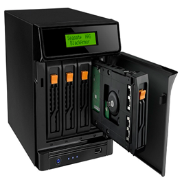
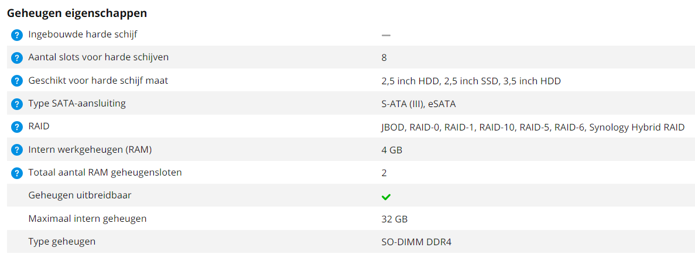

Wie zijn bestanden centraal wil opslaan maar geen vertrouwen heeft in de cloud kan kiezen voor een Network Attached Storage (NAS).
Een NAS is een embedded system waarop meestal een variant van het Linux besturingssysteem draait. Het apparaat is verbonden met het netwerk waardoor alle apparaten die ermee verbonden zijn bestanden kunnen lezen en schrijven.

Een NAS koop je vaak in combinatie met meerdere harde schijven waarop je een RAID configuratie toepast.
Welke RAID configuratie je kiest heeft natuurlijk te maken met in welke mate je je gegevens wil beschermen.
RAID 0 / JBOD bieden geen redundantie. RAID 1, 5, 6, 10 doen dat wel. Wil je bescherming tegen het gelijktijdig falen van twee harde schijven dan kies je RAID 6.
